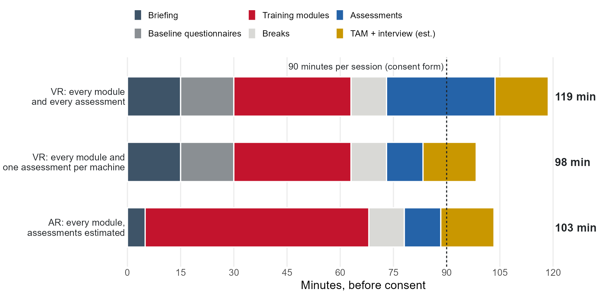

Ibrahim: what are the plans for the experiment to test "extreme cases"?
Jeff generously offered data for the cost-benefit study. Leo: have you reached out?
Makino: Where Does the Proposed Meeting Stand?
Sept 19 Email sent about Arthur's first demo (D200Z)
Sept 27 Arthur builds the second demo (UX3i)
Oct 16 Still open: a Makino technical manager's visit, and a date for Michael's visit
Oct 22 We mention it to BWC in the Q6 meeting
Oct 30 Today
Mayyas: is there a date, who attends, and what does Makino want to see?
BWC: Q5 Report Approved; Track 3 Abstract in 17 Days
✓ Q5
Quarterly report approved
D7.4 and D3.4 (grant meeting) are approved. The September/October meeting documents (D2.9) are pending.
17 days
Track 3 abstract
Due Monday, November 16, 5 PM ET.
Oct 22
From the Q6 meeting
Final presentation example (Deliverable-Objective 9.2): BWC shared a past project's video and asked teams not to distribute it, so Fadel is sending the link by email. Next documents: D2.10 and D7.5, January 15, 2027.
Team Requirements
⚖️
COI training
CITI COI: Public Health Service course. It covers undergraduate assistants, graduate assistants, research staff, and investigators.
File it in DriveSIGHT Project\PCard\<Month YYYY>\<Vendor>
Jacob processes itThis applies to everyone
No AI-generated emails. I want to know your voice.
The Evolution of our Experimental Plan
2025: the commitment
Aug 15 Recruit 40 workers for the VR/AR evaluation (Meeting 4)
Nov 20 IRB approves the study (Meeting 10)
Summer 2026: the plan
Jul 24 Testing set for December to March; within-subject design (Meeting 23)
Aug 7 Two Hamilton students prioritized for usability testing (Meeting 24)
Sep 4 Protocol moved to a dedicated breakout (Meeting 25)
Fall 2026: the protocol
Sep 11 Breakout: 40 participants, 36 complete both sessions; goals; $75 per session; mill risk (after Meeting 25)
Sep 12-13 Experiment Materials folder: questionnaires, example papers, sample protocol
Oct 2 Lora presents the protocol; next steps are the amendment, final protocol, and pre-pilots (Meeting 26)
Oct 16 Amendment and protocol meeting scheduled (Meeting 27)
Oct 23-28 Protocol meeting, then a detailed review of the materials by email
The goal, the numbers, and the materials have been on the record for weeks. Today is about decisions and owners.
September 11: What We Already Worked Through
Assessments: What Each Participant Will Answer
Before the session
During the session
After the session
Informed consent comes first, one participant at a time, before any questionnaire.
1Read the consent form, alone or with the researcher
2Ask any questions about the study
3Sign one copy and keep the other
4Receive a participant ID
"Before we continue, I would like you to read and sign this consent form. This explains the research study and your role and rights throughout the process. I am happy to answer any questions you might have. I also have a copy of the consent form that I will leave with you."Researcher script, SIGHT experiment protocol
Demographic questionnaire. Lora is fine with fixed categories for experience and training, if each has a clear definition.
Age
Gender: Male; Female
Hand dominance: Left; Right; Ambidextrous
Do you wear corrective lenses? Yes; No. If yes, are you wearing them now? Yes; No
Current role
Prior machine experience
Prior relevant training
Nordic questionnaire: workers' safety commitment. With both students and industry participants, this is the most relevant part of NOSACQ-50. Four-point scale, strongly disagree to strongly agree. (R) marks items scored in reverse.
We who work here try hard together to achieve a high level of safety
We who work here take joint responsibility to ensure that the workplace is always kept tidy
We who work here do not care about each others' safety (R)
We who work here avoid tackling risks that are discovered (R)
We who work here help each other to work safely
We who work here take no responsibility for each others' safety (R)
Possible addition: safety knowledge items we create or curate.
An example of the kind of item we mean, inspired by ASP study material:
Which of these protects an operator at the mill without the operator having to do anything?
A fixed guard around the cutting area
A warning label on the machine
A reminder in the SOP
An E-stop button
OSHA Job Hazard Analysis quiz (12 questions). Lora: this measures general safety knowledge, so it does not need to match our hazards.
A job hazard analysis is most effective when carried out by:a) The engineer who designed the equipment or process; b) The manager who oversees the area; c) A team of workers, supervisors, and subject matter experts who all understand the operation; d) A person with specialized JHA training, such as the safety manager
When you cannot eliminate a hazard, what type of control measure should you use first to protect workers from it?a) Engineering controls; b) Administrative controls; c) Personal protective equipment; d) Safety training
True or false: The best way to control any potential hazard is to eliminate it entirely.
Which of these could be a source of hazards?a) Rotating parts on a machine; b) Repetitive lifting of objects; c) Walking on a wet floor; d) All of the above
Which of these should you discuss when preparing a JHA?a) Step or task, risk assessment to determine the worst-case injury, person responsible for implementing corrective action; b) Step or task, potential hazards, needed control measures; c) Potential hazards, risk assessment to determine the most likely injury, PPE needed; d) Potential hazards, PPE needed, person responsible for corrective action
Which of these is not an engineering control?a) A device that blocks the hazard at the source before it comes into contact with the worker; b) A ventilation system to reduce exposure to an air contaminant; c) Gloves; d) Guardrails on a scaffold
Which of these is an administrative control?a) Personal protective equipment; b) A changed procedure; c) An enclosure around a machine to reduce the noise it produces; d) Substituting a chemical in a process with a less hazardous one
When choosing jobs to conduct JHAs for, you should prioritize:a) Jobs that might cause severe or disabling injuries or illness, including those with no history of previous incidents; b) Jobs that are new or have undergone changes; c) Jobs that have detailed written instructions because they are complex; d) All of the above
When should you review an existing JHA?a) When there is a change in the job or if an injury or illness occurs on a specific job; b) Periodically (to ensure it is still accurate and to find hazards that the initial analysis did not identify); c) Never; d) Both answers (a) and (b)
True or false: A JHA is a method for identifying hazards; it examines the steps in the job, then identifies ways to control the hazards found.
Which of these is not a benefit of JHAs?a) They prevent workplace injuries and illnesses; b) They raise workplace productivity; c) They qualify the workplace for an OSHA recognition program; d) They help a worksite comply with OSHA regulations
Using PPE as a control strategy is acceptable:a) While engineering controls are being developed and installed; b) When engineering controls are determined to be infeasible or impracticable; c) When all other controls are not enough to reduce the exposure to the hazard; d) All of the above
General Attitude Towards Technology (18 items). Six-point scale, strongly disagree to strongly agree. (R) marks items scored in reverse.
Technology makes our lives easier and more comfortable.
Technology can sort out any problem.
Continued technological innovation is essential for improving people's life satisfaction.
Technology makes our way of life change too fast. (R)
Technology expands our limits.
Technology creates novel problems. (R)
Technology can sometimes damage people's moral sense. (R)
The applications of technology can threaten human rights. (R)
New inventions will always be found that counteract any harmful effect of technological developments.
The benefits of technology are greater than any harmful effects it may have.
If a new technology poses risks that are uncertain and not yet fully understood, the development of this technology should be stopped even if benefits are expected. (R)
If we attach too many risks that are not yet fully understood, we could miss out on technological progress.
Limits need to be set for technological progress. (R)
I am worried about new technologies fraught with uncertainties. (R)
Without technological innovation the economy would be less stable.
Technology means progress.
The development of technologies is important for the economy.
Technology kills jobs. (R)
VR assessment modules. Participants complete these as tasks in the system. The protocol uses one per machine, the same one for everyone. Which one per machine?
CNC lathe6 modules, 10:58
Set Up PPE1:35
Set Up the CNC Machine3:14
Load the Workpiece1:01
Program the Machine2:34
Run the Machine1:49
Clean and Shut Down0:45
Cobot5 modules, 8:48
Set Up PPE1:47
Boot the Arm1:06
Generate a Program2:51
Run a Program2:16
Shut Down the Arm0:48
Manual mill7 modules, 10:50
Set Up PPE1:21
Set Up the Machine4:12
Move the XYZ Axes1:06
Load the Workpiece1:18
Configure the Spindle0:58
Run the Machine1:16
Clean and Shut Down0:39
We do not have assessment questions for AR. Lora: "the AR ones still need to be developed."
Starting point: the scenario-style items Ibrahim sent on Oct 26.
Mill: an operator clears chips from the vise area with a hand brush while the spindle is still spooling down.
Which two hazards are present?a) Rotating tool contact and chip laceration; b) Falling workpiece and electrical shock; c) Dust inhalation and noise; d) Trip hazard and back strain
Which control should be applied first?a) Wear safety glasses and gloves; b) Wait for the spindle to stop completely, then clear chips with a brush, never by hand; c) Use compressed air to blow chips away; d) Clear chips while the machine is in feed hold
Lathe (Haas TL-1): an operator loads a 6-inch round bar into the three-jaw chuck and reaches in to check the grip before closing the door.
What is the main hazard at this step?a) Flying chips from the cutting tool; b) The chuck starting to rotate while the operator's hand is inside the work envelope; c) Coolant on the floor; d) Noise from the spindle
Which control removes that hazard rather than just reducing it?a) Wearing cut-resistant gloves; b) Posting a warning sign on the machine; c) A door interlock that prevents spindle start while the door is open; d) Telling the operator to be careful
Observation sheet, filled in by the experimenter for each session.
Participant ID, date, interviewer/observer, and machines 1, 2, and 3
General observations that are useful to the assessment of system usability and engagement
Any instances of the participant asking for help
Points of confusion or frustration, transcribed word for word and described as well as possible
Note the time where you can, so it can be matched to the system logs (Lora)
Original Technology Acceptance Model. Seven-point scale, extremely disagree to extremely agree. Lora: "we can go back to the original TAM questions," and we can drop personal innovativeness.
Perceived usefulness
Using this product in my job enables me to accomplish tasks more quickly than other products in its class.
Using this product improves my job performance.
Using this product in my job increases my productivity.
Using this product enhances my effectiveness on the job.
Using this product makes it easier to do my job.
I have found this product useful in my job.
Perceived ease of use
Learning to operate this product was easy for me.
I found it easy to get this product to do what I want it to do.
My interaction with this product has been clear and understandable.
I found this product to be flexible to interact with.
It was easy for me to become skillful at using this product.
I found this product easy to use.
Interview questions. The draft names VR only, so it needs an AR version. Answers in writing or researcher notes, unless we add audio to the IRB.
How does the SIGHT VR system compare to other machine safety trainings you have participated in?
What part of your experience with SIGHT increased or reduced your engagement?
Are there aspects of the SIGHT system that should be changed or altered so that it will be more effective?
Are there aspects of the SIGHT system that should not be changed?
What would make the system easier to understand or use?
Protocol: Where We Agree
Settled
Pre-pilot: six team members, separate from the 40, can start now
30-minute metric: get started and reach the first module
Recruiting: other Ohio manufacturers and people with manufacturing experience are fine
Questionnaires: keep Nordic, return to the original TAM, drop innovativeness
Participant IDs: we create them on site, with no written link to names
Parallel sessions: allowed; consent one at a time; AR needs two headsets
Consent form: sickness risk stays under VR; the data-sharing wording stays
Agreed, but the IRB must change
Compensation: we already started ordering cards at $75 per session. The IRB recruitment script says $50 in total. Jay and Fadel fix this in the amendment.
Session order: VR, then AR about one week later
Personnel: add Om, Usman, and everyone handling the data
Headset: the application still says HoloLens; we use Magic Leap 2
Recording: screen capture and video (Meeting 26)
Consent form email: fix the domain typo (maimioh)
One amendment: Jay, with Lora and Kristen.
Protocol: What Is Still Open
Question
Where it stands
Owner and date
No assessment questions exist for AR
Lora worked on the VR items; the AR items still need to be developed. Ibrahim sent examples on Oct 26.
Do participants run the machines in AR?
The IRB asked for non-operational machines; the modules power on, run, and cut. Lora: running them needs a revised protocol, safety measures, and PPE. Ibrahim: cold run first, guarded operation later if needed.
Do we measure hazard recognition before and after?
Ibrahim: pre and post items matched to the training, as the proposal says. Lora: recognition and recall come from the end-of-training assessments, with no retention period committed.
Do the questions match what we train?
Ibrahim asked for every learning objective to map to a question, and Mayyas does not yet see the connection. Nobody owns that map.
Audio in the interview?
Adding it needs the IRB. Without a full thematic analysis, written answers or notes are enough.
Time Assessment

Recruitment: Plan and Next Steps
A Final Exam Is Not Voluntary
"You may refuse to participate in this study without penalty of loss of benefits to which you are otherwise entitled."Our approved consent form (Protocol 02415r)
"...participation is voluntary, refusal to participate will involve no penalty or loss of benefits..."45 CFR 46.116(b), CITI informed consent refresher
We told the IRB we recruit through flyers, email announcements, and informational meetings.Our IRB application. A grade is not on that list.
When the instructor holds the grade, a student cannot freely say no, however good our intentions and however much we need the 40.
A path to ask the IRB about
The class uses VR as a course activity, with no research data
Someone other than the instructor invites students to the study
No grade depends on joining; the instructor does not know who joined
Kristen and Lora: what would the IRB need to see? Next: we owe the instructor a reply by Monday, November 2.
Preceding Steps to the Full Experiment
Instructional AR
Done
23 modules, 143 steps, all three machines
CITI: Om, Usman
Nov 1
Certificates uploaded
Internal AR testing
Next week
About one hour per machine, in person. Austin shares the link.
New-hire training
Nov 4
VR, AR, and machines, with Michael and Ibrahim
Pre-pilot
Date?
Six team members; Om or Usman goes first
Dry run
Date?
Lora leads a mock session
IRB amendment
Date?
Jay, with Lora and Kristen
Full experiment
Date?
40 recruited, 36 complete
Plan of record: testing December 2026 to March 2027Classes end: Dec 4; finals Dec 7-11Winter break: students likely awayMakino lab booked: weekdays 7:50-10:30 and 11:30-1:40 through Dec 22; Wed 6:00-9:45 PM
Where can we accelerate, and what is the first full session date we can commit to?
MaxByte: 10 Weeks Waiting on the Redlined First Amendment
10 weeksAugust 20 to October 30, 2026
Aug 12: Miami's counsel finishes the updated First Amendment. Aug 20: Mayyas sends the request to MaxByte. Oct 30: we are still waiting on this simple request.
Ram: when will we have the redlined document back?
Mill annotation and all three machines in AR (target was Oct 23)
Unity license renewal
Table of SOP objects versus annotations, and how accuracy is calculated
Reply on the top-down camera annotations
Industrious Group: Thank You
Thank you, Jeff, and the whole Industrious Group team.
🤝
Your time
You spent a morning with us at the AM Hub on September 25, touring the labs and trying the AR headset.
💡
Your feedback
Your first time in the headset showed us that new users need a short onboarding, which Austin and Michael are now building. You also pointed us to conferences for the team.
📊
Your generosity
You offered preliminary data, and a colleague's time, to help Leo test the cost-benefit model.
Your practical view keeps this work grounded in real shop floors. We would be delighted to visit you in Cleveland, whenever it suits your team.
Risk Mitigation and Log Updates
Risk
Mitigation
Status
IRB does not yet cover what we plan to run
One combined amendment; decide the AR option first.
IRB-approved recruitment only; keep grades and participation separate.
New
Students are unavailable after classes end on Dec 4
Set the first session date today; add non-student participants.
New
No AR assessment questions; other questions may not map to training
Name an owner today; map objectives to questions before the pre-pilot.
New
Classes or visitors interrupt sessions in the shared lab
Reserve through 25Live; weekly schedule posted outside the labs.
In progress
Only one person could run the AR system
Michael backs up the CNC lathe and cobot; Jay is certified on the mill.
Mitigated
Magic Leap 2 is discontinued
Backup headset received and tested.
Mitigated
Action Items and Deadlines
Captured live (owner, item, due date):
Deadlines Oct 30: Q5 expenditure report and invoice Nov 1: CITI certificates for new hires Nov 2: reply to the instructor Nov 4: new-hire training Nov 13: next project meeting Nov 16, 5 PM ET: Track 3 abstract Jan 15, 2027: D2.10 and D7.5
Owners we still need
AR assessment questions
AR machine decision
Question-to-training map
Pre-pilot and dry run dates